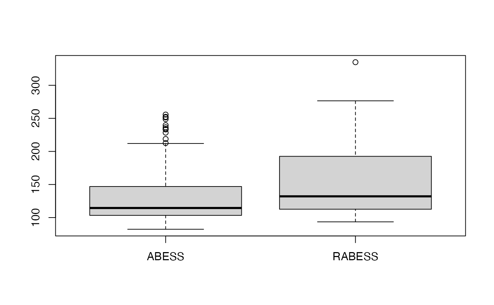

../vignettes/v07-advancedFeatures.Rmd
v07-advancedFeatures.RmdWhen analyzing the real world datasets, we may have the following targets:
1. certain variables must be selected when some prior information is given;
2. selecting the weak signal variables when the prediction performance is main interest;
3. identifying predictors when group structure are provided;
4. pre-excluding a part of predictors when datasets have ultra high-dimensional predictors.
In the following content, we will illustrate the statistic methods to reach these targets in a one-by-one manner, and give quick examples to show how to perform the statistic methods with the abess package. Actually, in the abess package, there targets can be properly handled by simply change the default arguments in the abess() function.
Nuisance regression refers to best subset selection with some prior information that some variables are required to stay in the active set. For example, if we are interested in a certain gene and want to find out what other genes are associated with the response when this particular gene shows effect.
In the abess() function, the argument always.include is designed to realize this goal. user can pass a vector containing the indexes of the target variables to always.include. Here is an example.
library(abess)
n <- 100
p <- 20
support.size <- 3
dataset <- generate.data(n, p, support.size)
dataset$beta## [1] 0.00000 0.00000 0.00000 0.00000 0.00000 84.67713 0.00000 0.00000
## [9] 0.00000 0.00000 0.00000 0.00000 0.00000 85.82187 0.00000 0.00000
## [17] 0.00000 47.40922 0.00000 0.00000
abess_fit <- abess(dataset[["x"]], dataset[["y"]], always.include = 6)
coef(abess_fit, support.size = abess_fit$support.size[which.min(abess_fit$tune.value)])## 21 x 1 sparse Matrix of class "dgCMatrix"
## 4
## (intercept) -4.767241
## x1 .
## x2 .
## x3 .
## x4 .
## x5 .
## x6 82.424118
## x7 .
## x8 .
## x9 .
## x10 .
## x11 .
## x12 .
## x13 .
## x14 89.031689
## x15 .
## x16 -12.622583
## x17 .
## x18 43.343247
## x19 .
## x20 .In some cases, especially under low signal-to-noise ratio (SNR) setting or predictors are highly correlated, the vallina type of \(L_0\) constrained model may not be satisfying and a more sophisticated trade-off between bias and variance is needed. Under this concern, the abess package provides option of best subset selection with \(L_2\) norm regularization called the regularized bess. The model has this following form:
\[\begin{align} \min_\beta L(\beta) + \lambda \|\beta\|_2^2 \end{align}\]
To implement the regularized bess, user need to specify a value to the lambda in the abess() function. This lambda value corresponds to the penalization parameter in the model above. Here we give an example.
library(abess)
n <- 100
p <- 30
snr <- 0.05
dataset <- generate.data(n, p, snr = snr, seed = 1, beta = rep(c(1, rep(0 ,5)), each = 5), rho = 0.8, cortype = 3)
data.test <- generate.data(n, p, snr = snr, beta = dataset$beta, seed = 100)
abess_fit <- abess(dataset[["x"]], dataset[["y"]], lambda = 0.7)Let’s test the regularized best subset selection against the no-regularized one over 100 replicas in terms of prediction performance.
M <- 100
err.l0 <- rep(0, M)
err.l0l2 <- rep(0, M)
for(i in 1:M){
dataset <- generate.data(n, p, snr = snr, seed = i, beta = rep(c(1, rep(0 ,5)), each = 5), rho = 0.8, cortype = 3)
data.test <- generate.data(n, p, snr = snr, beta = dataset$beta, seed = i+100)
abess_fit <- abess(dataset[["x"]], dataset[["y"]], lambda = 0.7)
coef(abess_fit, support.size = abess_fit$support.size[which.min(abess_fit$tune.value)])
pe.l0l2 <- norm(data.test$y - predict(abess_fit, newx = data.test$x),'2')
err.l0[i] <- pe.l0l2
abess_l0 <- abess(dataset[["x"]], dataset[["y"]])
coef(abess_l0, support.size = abess_l0$support.size[which.min(abess_l0$tune.value)])
pe.l0 <- norm(data.test$y -predict(abess_l0, newx = data.test$x), '2')
err.l0l2[i] <- pe.l0
}
mean(err.l0)## [1] 130.4913
mean(err.l0l2)## [1] 152.1944
We see that the regularized best subset select indeed reduces the prediction error.
Best group subset selection (BGSS) aims to choose a small part of non-overlapping groups to achieve the best interpretability on the response variable. BGSS is practically useful for the analysis of ubiquitously existing variables with certain group structures. For instance, a categorical variable with several levels is often represented by a group of dummy variables. Besides, in a nonparametric additive model, a continuous component can be represented by a set of basis functions (e.g., a linear combination of spline basis functions). Finally, specific prior knowledge can impose group structures on variables. A typical example is that the genes belonging to the same biological pathway can be considered as a group in the genomic data analysis.
The BGSS can be achieved by solving: \[\begin{equation}\label{eq:constraint}
\min\limits_{\beta \in \mathbb{R}^p} \frac{1}{2n}\|y-X\beta\|_2^2,\quad s.t.\ \|\beta\|_{0,r}\leqslant s,
\end{equation}\] where \(\|\beta\|_{0,r} = \sum_{j=1}^J I(\|\beta_{G_j}\|_{2}\neq 0)\) in which \(\|.\|_r\) is the \(L_2\) norm and model size \(s\) is a positive integer to be determined from data. Regardless of the NP-hard of this problem, Zhang et al develop a certifiably polynomial algorithm to solve it. This algorithm is integrated in the abess package, and user can handily select best group subset by assigning a proper value to the group.index arguments in abess() function.
We use a synthetic dataset to demonstrate its usage. The dataset consists of 100 observations. Each observation has 20 predictors but only the first three predictors among them have a impact on the response.
set.seed(1234)
n <- 100
p <- 20
support.size <- 3
dataset <- generate.data(n, p, beta = c(10, 5, 5, rep(0, 17)))Support we have some prior information that the second and third variables belong to the same group, then we can set the group_index as:
Then, pass this group_index to the abess() function:
abess_fit <- abess(dataset[["x"]], dataset[["y"]],
group.index = group_index)
str(extract(abess_fit))## List of 7
## $ beta :Formal class 'dgCMatrix' [package "Matrix"] with 6 slots
## .. ..@ i : int [1:3] 0 1 2
## .. ..@ p : int [1:2] 0 3
## .. ..@ Dim : int [1:2] 20 1
## .. ..@ Dimnames:List of 2
## .. .. ..$ : chr [1:20] "x1" "x2" "x3" "x4" ...
## .. .. ..$ : chr "2"
## .. ..@ x : num [1:3] 10.2 4.92 4.88
## .. ..@ factors : list()
## $ intercept : num 0.0859
## $ support.size: int 2
## $ support.vars: chr [1:3] "x1" "x2" "x3"
## $ support.beta: num [1:3] 10.2 4.92 4.88
## $ dev : num 16.6
## $ tune.value : num 294The fitted result suggest that only two groups are selected (since support.size is 2) and the selected variables are matched with the ground truth setting.
In the case of ultra high-dimensional data, it is more effective to do feature screening first before carrying out feature selection. The abess package allowed users to perform the sure independent screening to pre-exclude some features according to the marginal likelihood.
abess packageUltra-high dimensional predictors increase computational cost but reduce estimation accuracy for any statistical procedure. To reduce dimensionality from high to a relatively acceptable level, a fairly general asymptotic framework, named feature screening (sure independence screening) is proposed to tackle even exponentially growing dimension. The feature screening can theoretically maintain all effective predictors with a high probability, which is called ``the sure screening property’’.
In the abess() function, to carrying out the Integrate SIS, user need to passed an integer smaller than the number of the predictors to the screening.num. Then the abess() function will first calculate the marginal likelihood of each predictor and reserve those predictors with the screening.num largest marginal likelihood. Then, the ABESS algorithm is conducted only on this screened subset. Here is an example.
library(abess)
n <- 100
p <- 1000
support.size <- 3
dataset <- generate.data(n, p, support.size)
abess_fit <- abess(dataset[["x"]], dataset[["y"]],
screening.num = 100)